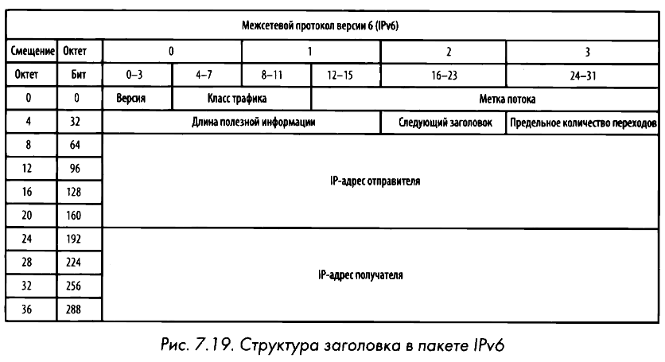

IPv6
Адрес IPv6 состоит из 128 бит, что обеспечивает пространство в 2^128 адресов. В IPv6 адреса принято записывать в шестнадцатеричной форме квартетами (8 групп по 2 байта), разделёнными двоеточием, например: 1111:0000:2222:0000:3333:4444:5555:6666. IРv6-адрес также состоит из сетевой и узловой частей, которые могут называться сетевым префиксом (назначается провайдером) и идентификатором интерфейса (узлом) соответственно. Для идентификатора интерфейса может использоваться формат EUI-64, где в качестве узла указывается измененный MAC-адрес: между первой и второй половиной добавляются 2 байта FFFE, а 7-ой бит 1-го байта устанавливается в 1.
Сетевой трафик по протоколу IPv6 разделяется на следующие категории:
- Одноадресатные (unicast) — стандартные адреса, которые делятся на глобальные (публичный адрес от провайдера), локальные (аналог частных в IPv4) и канальные (link-local, используются для работы протокола NDP, назначаются автоматически и не маршрутизируются в интернете).
- Многоадресатные (multicast) — используются вместо широковещательных (broadcast) адресов, которые IPv6 не поддерживает; на запрос реагируют все устройства группы.
- Резервные (anycast) — групповой адрес, применяемый маршрутизаторами, где на запрос отвечает всегда ближайшее устройство.

В отличие от IPv4:
- упрощенный заголовок на 40 байтов;
- обязательное использование IPSec;
- нет необходимости в NAT;
- агрегирование (объединение) адресов по континентам и странам.
Адреса назначаются 5 региональным реестрам (RIR) агентством ICANN: ARIN (Северная Америка), RIPE NCC (Европа, Ближний Восток, Центральная Азия), APNIC (Азия, Тихоокеанский регион), AfriNIC (Африка) и LACNIC (Латинская Америка).
NDP вместо ARP
В протоколе IPv6 широковещательный трафик не поддерживается, заменой является опрос соседа (neighbor solicitation) с помощью протокола NDP (Neighbor Discovery Protocol - протокол обнаружения соседей) и ICMPv6 сообщений. Этот протокол берет на себя функции ARP и ICMP из IPv4: определяет префиксы подсети, шлюзы по умолчанию, соседей по локальной сети, разрешает адреса и выполняет автонастройку.
NDP поддерживает 5 типов пакетов ICMPv6:
- Запрос на доступность маршрутизатора (Router solicitation), отправляемый по многоадресатному адресу FF02::2.
- Ответ маршрутизатора (Router advertisement).
- Запрос на доступность соседа (Neighbour solicitation) — ICMPv6 type 135.
- Ответ соседа (Neighbour advertisement) — ICMPv6 type 136.
- Перенаправление (Redirect).
Механизм обнаружения:
- Хост посылает пакет с сообщением Neighbor Solicitation (ICMPv6 type 135) через многоадресатную рассылку.
- В ответ получит пакет с сообщением Neighbor Advertisement (ICMPv6 type 136).
- Далее происходит передача данных в обычном режиме с эхо-запросами и ответами по протоколу ICMPv6.
Фрагментация
IPv6 фрагментация используется в меньшей степени, поэтому параметры ее поддержки не включаются в заголовок IPv6. Предполагается, что устройство, передающее пакеты IPv6, должно сначала запустить процесс поиска размера блока MTU, чтобы определить максимальный размер отправляемых пакетов, прежде чем фактически отправить их. Если же маршрутизатор получит пакеты, которые оказываются слишком длинными и превышают размер блока MTU, то он отбросит их и возвратит сообщение ICMPv6 Packet Тоo Big (type 2). Получив это сообщение, передающее устройство попытается снова послать пакет, но уже с меньшим блоком MTU, если только подобное действие поддерживается в протоколе верхнего уровня. Этот процесс будет повторяться до тех пор, пока не будет достигнут достаточно малый размер блока MTU или предел фрагментации полезной информации.
Миграция и протоколы IPv6 поверх IPv4
Для плавного перехода и взаимодействия сетей применяются следующие технологии:
- Двойной стек (Dual stack) — все сетевые устройства работают одновременно на IPv4 и IPv6.
- Туннелирование — пакеты IPv6 инкапсулируются в пакеты IPv4 и передаются по сети IPv4, после чего извлекаются в сети назначения. Включает в себя вручную настроенные туннели (MCT) на конечных маршрутизаторах.
- 6to4 — позволяет передавать пакеты IPv6 через сеть IPv4 с поддержкой ретрансляторов и маршрутизаторов. Создается динамический туннель, конечная точка которого определяется путем добавления глобального IPv4-адреса в шестнадцатеричной форме к зарезервированному префиксу
2002::/16. - Teredo — применяется для одноадресатной передачи с использованием протокола NAT. Туннель создается конечными узлами: пакеты IPv6 инкапсулируются в пакеты UDP и посылаются через сеть IPv4.
- ISATAP — протокол внутрисайтовой автоматической туннельной адресации, допускающий обмен данными исключительно между IPv4- и IРv6-устройствами. Динамически создает туннель, но не работает при наличии преобразования NAT.
- NAT-PT — трансляция адресов IPv6 напрямую в адреса IPv4 для взаимодействия разных сетей друг с другом.